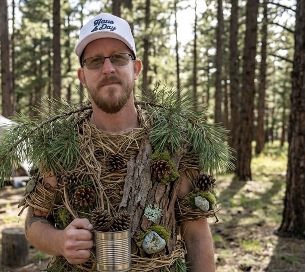

Colorado Springs, CO — Adam S., a fixture of the exclusive Woodbridge community set out days ago for what was supposed to be a routine backpacking trip in the foothills west of Colorado Springs. He did not come back — at least not in the way anyone expected. By his own account, Adam has renounced his former life entirely to join a small band of forest-dwelling nomads he met on the trail.
Left behind is a life most would consider enviable: a wife, a young son and daughter, and an estate that includes a golf course property in Woodbridge and a sizable ownership stake in SpaceX. Adam says none of it matters to him anymore.

"A 9-iron means nothing out here. A rocket means nothing out here," Adam explained, speaking to this reporter from a clearing he declined to identify, a pine bough resting across his shoulders. "I owned a piece of a company that lands rockets on barges, and I have never felt anything as profound as the moment I learned to land a pinecone in a tin cup. These possessions were only ever borrowing my attention."
Adam is adamant that he has not, in fact, abandoned his family. "I'm not leaving them behind. I would never," he said. "I simply trust that the universe will guide them to me when the time is right. If they truly need me, the wind will carry them up the mountain. That's just physics, more or less."
Pressed on whether there was anything from his old life he missed, Adam paused for a long moment. "My VR Racing Rig," he admitted quietly. "Sometimes, when the canopy creaks in the wind, it sounds almost like the engine note on the final lap at Monza." He then composed himself. "But the forest provides."
Central to Adam's transformation is a member of the group he refers to only as "the one who found me." Adam is firmly convinced that this individual is the reincarnated spirit of Riley, his late German shepherd, a dog that, in life, bore an uncanny resemblance to George Clooney. "I knew it the instant our eyes met across the campfire," he said. "The head tilt. The way she sighed and circled three times before sitting down. Riley always knew when I was lost. She came back to lead me home, to a home with no walls."
The couple who invited Adam on the trip, longtime friends Lindsay and Todd, remain at the trailhead parking lot, hoping he will reconsider. They are, by their own description, "baffled."
"We planned this trip for months. It was supposed to be a simple little backpacking trip." said Lindsay. "On the second morning he traded his Aeropress coffee maker to a stranger for a rock, and that was the last conversation we had. He keeps calling Todd's name like he's never heard it before, as if the word itself is new to him."
Todd's concern runs in an unexpected direction. "Look, I'm worried about Adam, obviously. But has anyone thought about the sour cream?" he asked. "Adam was singlehandedly managing the entire supply chain operation for Daisy brand. The whole thing. Cultures, refrigeration logistics, the tub procurement — all of it lived in his head. He'd be on the phone settling a dairy shortage in one breath and ranking the back nine in the other."
"You don't understand," Todd continued, lowering his voice. "If that man does not come down off this mountain, there is going to be a national sour cream event. People are going to reach for their baked potatoes and there will be nothing there. Nothing."
Confronted with his friends' worries, Adam was unmoved. "Todd is still thinking in tubs," he said gently. "There will always be sour cream, or there won't, and either way the river keeps moving. Tell Daisy I wish them peace."
As of press time, Adam's family had not commented, and the nomads had relocated their camp to a location even Lindsay and Todd could not find. Todd has reportedly begun fielding calls from concerned regional grocers.